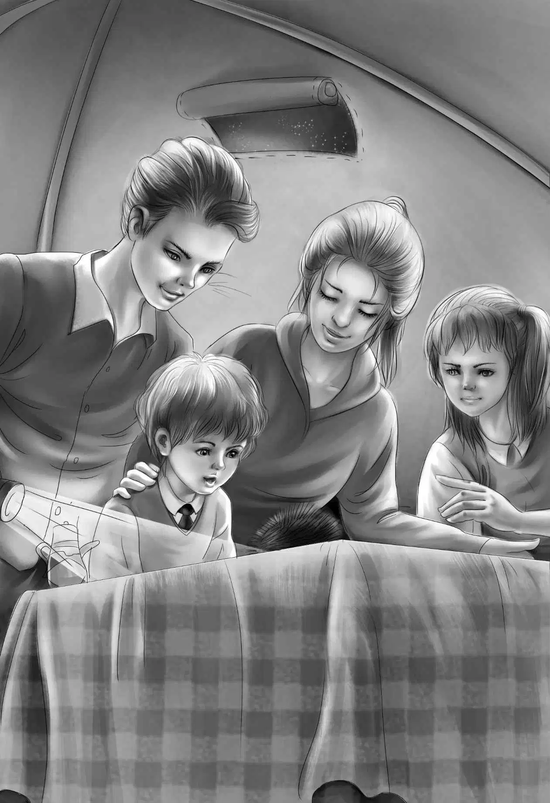

The Lumber Camp
月光非常明亮，照得四周就像白天一样。
希尔低声说：“别出声，悄悄地看着就行了。”另一个帐篷的门边儿也慢慢地被掀开了。
孩子们看到一只很大的黑熊。黑熊没有听到他们的动静，也没有嗅到他们的气味。它此刻只被火腿的香味所吸引，并不停地用巨掌去够摇晃不已的美味。
“别害怕，维莉，”爱丽丝低声说，“这只熊不会伤害我们，它怕我们。”
就在这时，火腿掉到了黑熊的脚边。黑熊垂下前掌，趴在地上，开始嚼火腿。
“哈！”班尼想，“我们的火腿完蛋了。”
就在这时，希尔先生用手电筒照亮了黑熊的脸。黑熊猛地跳起来，拼命逃到了树林里。
“黑熊可真好玩儿！”班尼笑了，“可它还是把火腿落下了。”
“太刺激了！”亨利说，“幸好希尔先生没睡着，还叫醒了我们。”
大家很快又睡熟了。他们并不知道，大乔之所以邀请希尔先生来，是因为他能让孩子们看到大黑熊。他们也不知道，希尔先生和那只黑熊其实是好朋友。黑熊明白，希尔先生在哪里，哪里就有好吃的。
第二天清晨，希尔先生一边帮大乔生火做饭，一边说：“吃过早餐之后我就得走了。你们出发后，很快就能看到一个伐木营地。”
“真希望您能把那个烤箱留给我们洗盘子用！”班尼说。
“没问题，那本来就是给你们买的。”希尔先生微笑着说。他把火腿洗干净，切成薄片，放在平底锅里，搁在火上煎烤。在清晨凉丝丝的空气中，热燕麦和牛奶散发的香味显得格外香甜。希尔先生在小烤箱里做了“速制面包”。面包一出炉，孩子们就听到树上很多冠蓝鸦开始叫起来。
“它们也想吃我们的早餐，”希尔先生抬头看了看，“大家都坐下来，扔点儿吃的到地上，它们就会靠得很近！”
空中飞满了美丽的冠蓝鸦，有六七只落到了地上，孩子们几乎都能摸到它们了。
“快点出发吧！”班尼终于忍不住了，“我想早点看到那个伐木营地。”他开始收拾盘子、碟子，鸟儿们也飞回了树上。
杰西笑了：“你怎么突然变成好管家了？我们来帮你吧！”
很快，营地就清理干净了，所有的东西都打包放到了独木舟里。接着，希尔先生分别把两条船推到了湖里。
“谢谢您，希尔先生。”大乔对老朋友说。
两只独木舟缓缓地滑入湖中，杰西转身喊道：“谢谢您为我们做的一切！”
孩子们不停地挥手，直到希尔先生转身进入树林。
“他真好，对吧？”维莉说。
“缅因州的向导都很好，维莉。”大乔笑道。
在独木舟的两侧，鱼儿不时地跳出水面。
“大乔，今天可以钓鱼吗？”班尼问道。
“当然，还非钓不可呢！”大乔说，“除非你们想连续三天都吃黄豆。咱们再走两三‘望’以后，就可以停下来钓鱼了。”
“两三……什么？”班尼问道。
“‘望’，”大乔解释说，“看到湖里那个拐弯的地方了吗？你望不到它的另一边，人们就把这种地方叫做‘望’。”
“真是个有趣的名字！”杰西说，“对了，我们用什么钓鱼呢？”
“你没看到希尔先生给我们带来的鱼竿吗？”班尼说，“他带了两根鱼竿，咱们每只独木舟上一根。大家可以轮流钓鱼。”
“钓鱼要用苍蝇做诱饵，”大乔告诉大家，“当然，不是真苍蝇。我的包里有一盒‘灰鬼’牌鱼饵。鱼儿以为它们是真苍蝇，就会追着游，最后上钩！”
独木舟经过了“两望”以后，大乔转身对亨利喊道：“想停下来钓鱼吗？”
“当然！”亨利说，“你教教我们该怎么钓吧！”
“爱丽丝会。”大乔停下手中的船桨大声喊道，“让她教你和维莉吧！”
两只独木舟并排漂在水面上，大乔和爱丽丝把“灰鬼”鱼饵拴到鱼钩上。大乔先把线甩到了水里。
“大乔真帅！”班尼喊道，“看起来很简单嘛！你钓到鱼以后，让我来试试，好吗？”
“当然可以。”大乔笑着说，“不过现在先坐着别动！”
“哇，快看！”杰西喊道，“爱丽丝，有鱼上钩了！快拉上来！”
“不急。”爱丽丝说，“你要不停地拉线，先消耗掉它们的体力。”她慢慢地、小心地拉着线，最后把那条大鱼拖到船上，从鱼钩上取了下来，其他人都羡慕地看着她。
不一会儿，大乔也钓到了一条，班尼都等不急了。
“该轮到我啦！”他喊着。
“好。”大乔说，“你刚刚看到我抛竿了，现在你抛一个试试。”
班尼接过鱼竿，像大乔一样“呼”的一声把线甩了出去。可是，线并没有落到水里，而是飞到了他身后。
“小心！”大乔大声提醒爱丽丝。可惜太迟了！鱼钩牢牢地扯住了爱丽丝的头发，一缕秀发飘散到她的脸上。
“噢，爱丽丝，你光滑漂亮的头发！”维莉说。
“真对不起，爱丽丝！”班尼赶紧说，“我也不知道怎么会弄成这样。”
“没事。”爱丽丝安慰道，“我应该自己当心的。第一次做，谁都难免有失误。维莉，一会儿你也试试抛竿吧！”
维莉立刻转过身，抛出了鱼钩。她说：“班尼，你可别再抛错了。”
“班尼，抛竿可不像看着那么简单，”杰西说，“还是让大乔继续钓吧！”
“没关系。”大乔回答说，“让班尼再试试，他肯定能学会的！”
在班尼坚持不懈的努力下，终于钓到了三条鲑鱼，让他极有成就感。他仔细地端详着鱼身上的每个斑点，好像那些都是他亲手画出来的一样。
大乔说：“鱼已经够吃了。不过，伐木营地的人们也会给我们提供食物，但能吃上我们亲手钓的鱼岂不是更好？”
“瞧那边水里的木头，”爱丽丝说，“营地的伐木工人把木头滚到水里，让木头自己漂到下游。”
独木舟继续向前划，孩子们听到了斧头砍树的声音，很快又听到大树倒地的巨响。最后，他们听到一个伐木工人对他们喊：“喂！喂！”
他们也对他招了招手。“快划，亨利！”大乔说，“我们今晚就住在这儿。”
伐木工人对他们的到来感到很开心，盛情邀请他们留下来吃午饭。
“乐意之至！”大乔说，“我们有很多鱼。另外，我们想在您的营地搭帐篷过夜，可以吗？”
“没问题！”那人爽快地答应了，他是这里的头儿。“喂，厨子！有客人来了！”
厨师抬头看了看，高兴地笑了：“快进来吧！你们想待多久就待多久，想吃黄豆吗？”
班尼走到厨师面前说：“我们都喜欢吃黄豆，不过我们还钓了好多鱼。你看，这几条是我钓的！”
“你能分出来哪些是你钓的吗？”亨利说。
“当然能。”班尼说，“我钓了三条鱼，每条我都认识。它们是这条，这条，还有这条。”
“我看都差不多啊！”厨子笑着说。
“厨子，把鱼做给小家伙吃吧！”老板说，“把他们喂得饱饱的。”
午饭做好了，厨子让班尼去摇餐铃。很快，伐木工人们穿过灌木丛，一路跑过来。
“他们吃饭总这么积极！”厨子说。
伐木工人们给年轻的客人腾出了坐的地方，三张桌子全坐满了。午饭很不错，是黄豆罐头配速制面包。
吃过午饭，头儿说：“比尔，你给客人们表演一下咱们是怎么砍树的吧！”
“比尔？”维莉不禁轻声提醒大乔。他们都想看看哪个是比尔，可是很快就发现那个人不是他们要找的比尔——他太年轻了。
下午很快就过去了。晚饭吃了鱼之后，孩子们都钻进自己的帐篷睡觉了。伐木工人们则住在自己的小木屋里。
“如果晚上你们听到刺猬的声音，千万别惊讶。”老板说，“刺猬喜欢这里的油脂，几乎每天晚上都会来。”
“它们会叫么？”亨利问道。
“会叫，叫声像猪一样，”老板回答说，“它们一边哼哼，一边嚼东西。咀嚼的声音就像有人在锯木头。”
营地里一片寂静，亨利突然被惊醒了，乍一听到锯木头的声音，他以为已经是早上了。但随之而来的尖厉哼哼声，让他瞬间意识到：“是刺猬来了！”
刺猬的声音也把其他孩子吵醒了，两个帐篷的门都打开了。
“好吵啊。”杰西轻声说，“它们在哪儿呢？”
“看到那个球了吗？”爱丽丝说，“桌子旁边的那个？那就是刺猬，正在啃桌子上的油脂。”

有五只刺猬在边吃边哼哼。孩子们看了好久，直到大乔说：“咱们该去睡觉了，它们差不多要回去了。”随后他拿手电筒朝刺猬一晃，刺猬们就一个个缩成了球，一动不动了。
大乔又晃了晃手电筒，刺猬吓得匆忙逃进了树林。
“真好！”杰西又躺了下来，“咱们今晚午夜看到的一切超有趣呢！”
“我倒希望它们别再来了，”爱丽丝说，“因为大乔说了，明天会很辛苦的。”
然而，就连大乔也没想到，第二天竟然会那么艰难。